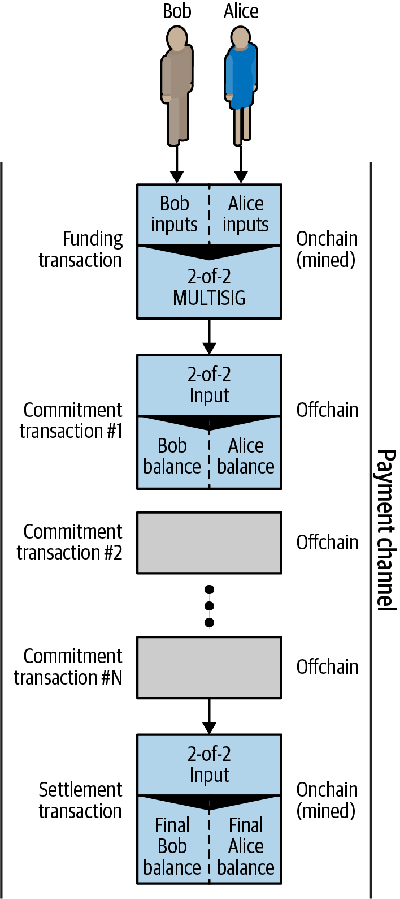
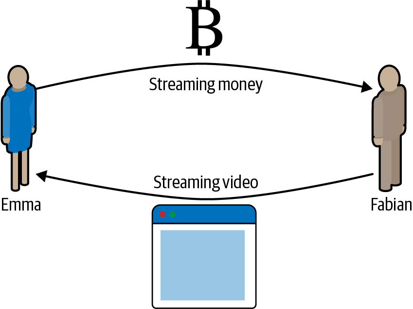
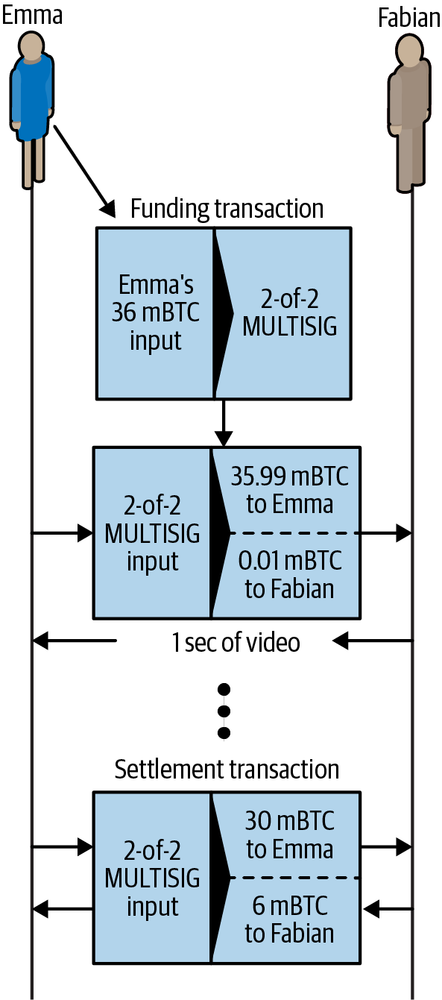
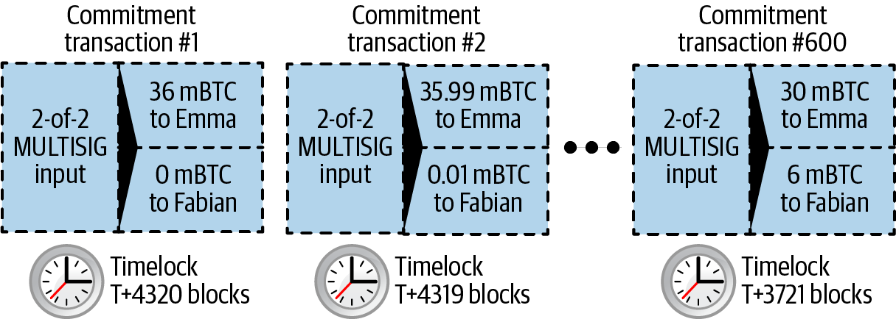
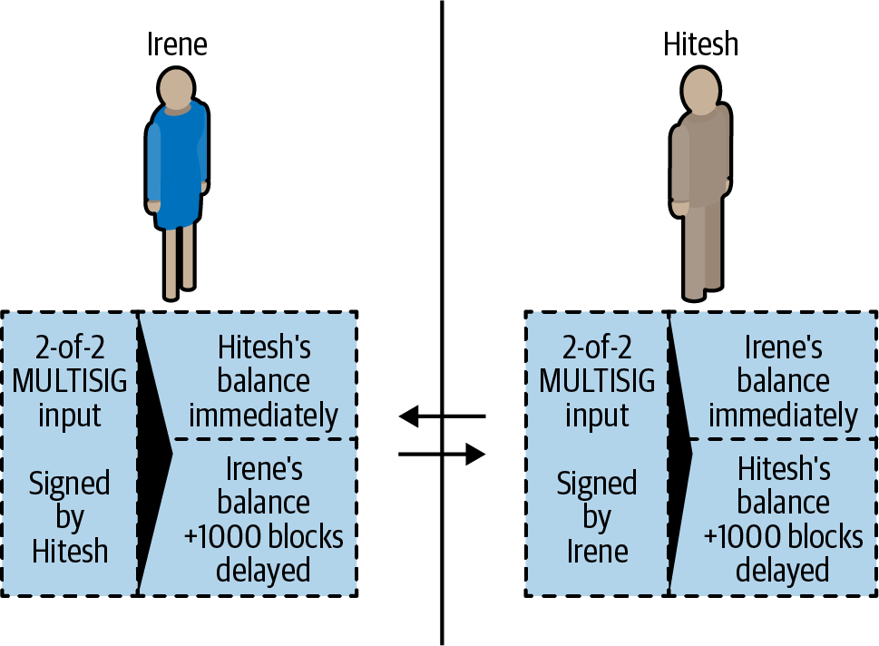
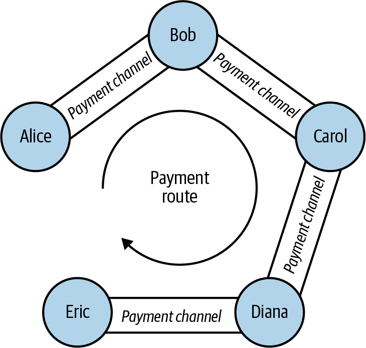
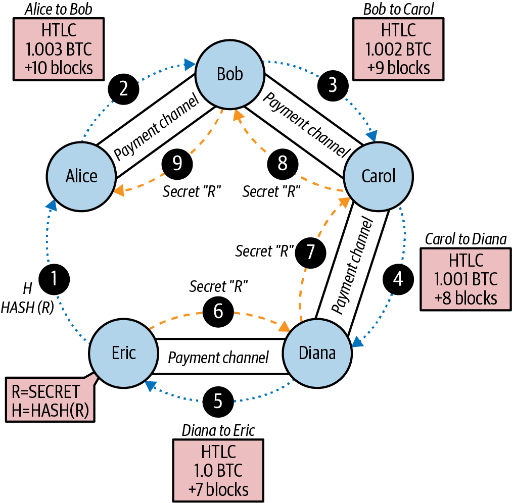

第二层应用
现在我们已经理解了 Bitcoin 主系统（即 第一层），让我们把它作为承载其他应用（即 第二层）的平台来重新审视。 在本章中，我们将研究 Bitcoin 作为应用平台所提供的特性。我们会考察构建应用所用的 原语，它们是任何区块链应用的基础构件。我们还将研究若干使用这些原语的重要应用，例如客户端验证、支付通道（payment channel）以及路由式支付通道（Lightning Network）。
基础构件（原语）
当 Bitcoin 系统长期正确运行时，它会提供一些可作为基础构件用于构建应用的保证，包括：
- 无双花（No double-spend）
-
Bitcoin 去中心化共识算法最根本的保证：在同一条有效区块链中，任何 UTXO 都不可能被花费两次。
- 不可篡改（Immutability）
-
一旦交易被记录到区块链中，并且其后续区块累积了足够的工作量，交易数据就实际上变得不可篡改。不可篡改性由能量背书，因为改写区块链需要消耗能量来产生 PoW。所需能量越多，包含某交易的区块之上累积的工作量越大，不可篡改性也就越强。
- 中立性（Neutrality）
-
去中心化的 Bitcoin 网络无论交易来自何处，都会传播有效交易。这意味着任何人只要支付足够手续费，就可以创建一笔有效交易，并且可以信任自己能够在任意时刻广播这笔交易并使其被打包进区块链。
- 安全时间戳（Secure timestamping）
-
共识规则会拒绝时间戳过于超前的区块，并尽量阻止时间戳过于滞后的区块。这样区块上的时间戳在一定程度上可被信任。区块的时间戳隐含地为其中所有交易的输入提供了一个"此前未被花费"的参照。
- 授权（Authorization）
-
通过去中心化网络验证的数字签名提供授权保证。任何要求数字签名的脚本，如果没有得到脚本中所指定私钥持有者的授权，都无法被执行。
- 可审计（Auditability）
-
所有交易都是公开的，可以被审计。所有交易和区块都可以沿着一条不间断的链一直追溯到创世区块。
- 记账（Accounting）
-
在任何一笔交易中（coinbase 交易除外），输入的金额等于输出的金额加上手续费。一笔交易无法创造或销毁 bitcoin 价值。输出不能超过输入。
- 不过期（Nonexpiration）
-
一笔有效交易不会过期。只要其输入仍未被花费，且共识规则不变，今天有效的交易，在未来仍然有效。
- 完整性（Integrity）
-
Bitcoin 交易中使用 SIGHASH_ALL 签名的输出，或被其他 SIGHASH 类型签名所覆盖的部分，一旦被修改就会使签名失效，从而使整笔交易无效。
- 交易原子性（Transaction atomicity）
-
Bitcoin 交易是原子的。它们要么有效并被确认（被打包），要么没有。部分交易无法被打包，也不存在交易的中间状态。在任意时刻，一笔交易要么已被打包，要么没有。
- 离散（不可分割）的价值单位（Discrete (indivisible) units of value）
-
交易输出是离散且不可分割的价值单位。它们要么被完整花费，要么完全保持未花费。它们无法被拆分或部分花费。
- 控制权法定人数（Quorum of control）
-
脚本中的多重签名约束规定了授权所需的法定人数，这一要求由共识规则强制执行。
- 时间锁/时效（Timelock/aging）
-
任何包含相对或绝对时间锁的脚本条款，只有在其经过的时间超过所指定时长之后才能被执行。
- 复制（Replication）
-
区块链的去中心化存储确保一笔交易在经过足够确认后会在全网被复制，并因此具有持久性，能够抵御断电、数据丢失等故障。
- 防伪造（Forgery protection）
-
一笔交易只能花费已经存在且经过验证的输出。无法凭空创造或伪造价值。
- 一致性（Consistency）
-
在不存在矿工分区的情况下，被记录到区块链中的区块发生重组或分歧的可能性随其所在深度呈指数级下降。一旦被深深地记录下来，要修改它所需的计算与能量都使得改动在实际中不可行。
- 记录外部状态（Recording external state）
-
一笔交易可以通过 OP_RETURN 或 P2C（pay to contract）来承诺某个数据值，用以表示某个外部状态机中的状态迁移。
- 可预测的发行（Predictable issuance）
-
bitcoin 的总发行量将少于 2100 万枚，并按可预测的速率发行。
这份基础构件清单并不完整，每当 Bitcoin 引入新特性时，都会增加新的构件 。
用基础构件搭建的应用
Bitcoin 所提供的基础构件构成了一个信任平台，可被用来组合出各类应用。下面是一些目前已经存在的应用示例，以及它们所用到的基础构件：
- 存在性证明（Proof-of-Existence，数字公证）
-
不可篡改 + 时间戳 + 持久性。一笔区块链交易可以承诺到某个值，从而证明某段数据在该交易被记录时已经存在（时间戳）。该承诺事后无法被修改（不可篡改），而该证明会被永久保存（持久性）。
- Kickstarter（Lighthouse）
-
一致性 + 原子性 + 完整性。如果你为一笔众筹交易的某个输入和输出签名（完整性），其他人就可以为该众筹追加资金，但在筹款目标（输出金额）达成之前（一致性），该笔交易无法被花费（原子性）。
- 支付通道（Payment Channels）
-
控制权法定人数 + 时间锁 + 无双花 + 不过期 + 抗审查 + 授权。用作支付通道"结算"交易的 2-of-2 多重签名（法定人数）加上时间锁（时间锁），既可以被任意一方（授权）在任意时刻持有（不过期）和花费（抗审查）。双方随后可以创建承诺交易（commitment transaction），用更短的时间锁（时间锁）来取代（无双花）结算交易 。
彩色币（Colored Coins）
我们要讨论的第一个区块链 应用是 彩色币（colored coins）。
彩色币是一组相似的技术的统称，它们利用 Bitcoin 交易来记录非 bitcoin 的外部资产的创建、所有权和转移。"外部"指的是不直接存储在 Bitcoin 区块链上的资产，与之相对的 bitcoin 本身则是区块链固有的资产。
彩色币既被用于追踪数字资产，也被用于追踪由第三方持有、并通过与彩色币关联的所有权凭证进行交易的实物资产。数字资产形式的彩色币可以代表无形资产，如股票凭证、许可证、虚拟财产（游戏道具），或几乎任何形式的授权知识产权（商标、著作权等）。实物资产形式的彩色币可以代表商品（金、银、石油）、土地所有权、汽车、船舶、飞机等的所有权凭证。
"彩色币"一词来自这样的设想：将一小笔名义上的 bitcoin（例如单个 satoshi）"染色"或打上标记，让它代表 bitcoin 数额本身以外的某种东西。打个比方，就像在一张面额 1 美元的纸币上盖上"本票为 ACME 公司股票凭证"或"本票可兑换 1 盎司白银"的印章，然后将这张 1 美元纸币作为该资产的所有权凭证流通。彩色币最早的实现叫 Enhanced Padded-Order-Based Coloring（EPOBC），它把外部资产分配给一个 1-satoshi 的输出。这样一来，它确实是真正的"彩色币"——每种资产都被作为单个 satoshi 的属性（颜色）附加上去。
彩色币更近期的实现，则使用其他机制将元数据附着于交易，同时配合外部数据存储将这些元数据与具体资产关联起来。截至本文写作时，主要使用的三种机制是：一次性印章（single-use seals）、P2C（pay to contract）和客户端验证（client-side validation）。
一次性印章（Single-Use Seals）
一次性印章 这一概念起源于物理安全领域。通过第三方寄送物品的人需要一种检测被篡改的手段，因此他们用一种特殊机制封装包裹，一旦包裹被打开，这种机制就会留下明显的破损痕迹。如果包裹送达时印章完好，发件人和收件人就可以确信包裹在运输途中没有被打开。
在彩色币的语境下，一次性印章指的是一种只能与另一个数据结构关联一次的数据结构。在 Bitcoin 中，这个定义由未花费交易输出（UTXOs）来满足。一个 UTXO 在有效区块链中只能被花费一次，而花费它的过程会把它与花费交易中的数据关联起来。
这构成了现代彩色币转移的部分基础。一个或多个彩色币被收到某个 UTXO 上。当该 UTXO 被花费时，花费交易必须描述这些彩色币如何被进一步花费。这就引出了 P2C（pay to contract）。
P2C（Pay to Contract）
我们 此前在 [pay_to_contract] 中已经介绍过 P2C，它后来成为 Bitcoin 共识规则中 taproot 升级的部分基础。简单回顾一下：P2C 允许花费方（Bob）和接收方（Alice）就某些数据（例如一份合约）达成一致，然后对 Alice 的公钥做 tweak ，使其承诺到该合约上。在任何时刻，Bob 都可以揭示 Alice 的原始公钥以及用来承诺合约所用的 tweak，从而证明她确实收到过这笔资金。如果 Alice 花费了这笔资金，就完全证明她知晓该合约的存在，因为她要花费收到的 P2C tweak 后的公钥所对应的资金，唯一的方式就是知道该 tweak（即合约）。
P2C tweak 后的公钥有一个强大的特性：对 Alice 和 Bob 以外的所有人来说，它看起来就和任何其他公钥一样，除非他们选择揭示用于 tweak 公钥的合约。关于该合约，没有任何信息会被公开——甚至连两人之间存在合约这件事本身都不会被公开。
P2C 合约可以任意长、任意详细，条款可以用任何语言书写，可以引用参与者想要引用的任何内容，因为该合约并不由全节点来验证，只有带有承诺的公钥才会被发布到区块链上。
在彩色币的语境下，Bob 可以通过花费关联的 UTXO 来打开包含其彩色币的一次性印章。在花费该 UTXO 的交易里，他可以承诺一份合约，规定彩色币的下一位（或多位）所有者要进一步花费这些币时必须满足的条款。新所有者不必是 Alice，尽管 Alice 是收到 Bob 所花费的那个 UTXO 的人，并且她已根据合约条款对自己的公钥做了 tweak。
由于全节点不会（也无法）验证合约是否被正确遵守，我们就需要确定由谁来负责验证。这就把我们引向 客户端验证（client-side validation）。
客户端验证（Client-Side Validation）
Bob 拥有一些与某个 UTXO 关联的彩色币。他以承诺到某份合约的方式花费了该 UTXO，合约规定了彩色币的下一位（或多位）接收者要进一步花费这些币时如何证明自己对其的所有权。
在实践中，Bob 的 P2C 合约可能只是简单地承诺到一个或多个 UTXO 的唯一标识符，这些 UTXO 将用作下一次花费彩色币时的一次性印章。例如，Bob 的合约可能规定：Alice 收到的、绑定到她 P2C tweak 公钥上的 UTXO 现在控制了他的彩色币的一半，而另一半彩色币现在被分配给另一个 UTXO，而后者甚至可能与 Alice 和 Bob 之间的交易毫无关系。这为对抗区块链监控提供了显著的隐私性。
当 Alice 之后想把自己的彩色币转给 Dan 时，她首先需要向 Dan 证明她确实控制这些彩色币。Alice 可以这样做：向 Dan 揭示她的 P2C 底层公钥以及 Bob 所选定的 P2C 合约条款。Alice 还会向 Dan 揭示 Bob 用作一次性印章的那个 UTXO，以及 Bob 曾告诉她的、有关该彩色币之前所有者的任何信息。简而言之，Alice 把这些彩色币每一次此前转移的完整历史交给 Dan，其中每一步都锚定在 Bitcoin 区块链中（但链上并不存储任何特殊数据——只是普通公钥而已）。这段历史很像我们称之为区块链的普通 Bitcoin 交易历史，但彩色币的历史对区块链的其他用户来说是完全不可见的。
Dan 使用他自己的软件对这段历史进行验证，这就是所谓的 客户端验证。值得一提的是，Dan 只需要接收并验证与他想要接收的彩色币相关的那部分历史。他不需要知道别人的彩色币发生了什么——例如，他永远不需要知道 Bob 没有转给 Alice 的另一半币的去向。这有助于增强彩色币协议的隐私性。
现在我们已经了解了一次性印章、P2C 和客户端验证，可以来看截至本文写作时使用这些机制的两个主要协议——RGB 和 Taproot Assets。
RGB
RGB 协议 的开发者率先提出了现代基于 Bitcoin 的彩色币协议中所用的许多理念。RGB 设计的一个主要要求是让协议与链下支付通道（参见 支付通道与状态通道）兼容，例如 Lightning Network（LN）中所使用的那种通道。RGB 协议的每一层都为此提供了支持：
- 一次性印章
-
为创建支付通道，Bob 将他的彩色币分配给一个需要他和 Alice 双方签名才能花费的 UTXO。他们对该 UTXO 的共同控制构成了未来转移所用的一次性印章。
- P2C（pay to contract）
-
Alice 和 Bob 现在可以签署 P2C 合约的多个版本。底层支付通道的强制执行机制能确保双方都有动力只把合约的最新版本发布到链上。
- 客户端验证
-
为确保 Alice 和 Bob 都无需互相信任，他们各自都会一路回溯检查彩色币的所有先前转移直到其创建之时，以确保所有合约规则都被正确遵守。
RGB 开发者还描述了该协议的其他用途，比如创建可定期更新的身份令牌（identity token），以防范私钥泄露。
更多信息请参阅 RGB 文档。
Taproot Assets
Taproot Assets 原名 Taro，是一种深受 RGB 影响的彩色币协议。与 RGB 相比，Taproot Assets 使用的 P2C 合约形式与 taproot 用于启用 MAST 功能（参见 [mast]）所使用的版本非常类似。Taproot Assets 相比 RGB 的优势在于：由于它与广泛使用的 taproot 协议相似，钱包和其他软件实现起来更简单。其缺点之一是它可能不如 RGB 协议灵活，尤其是在实现身份令牌等非资产功能时。
|
Taproot 是 Bitcoin 协议的一部分。而 Taproot Assets 尽管名字相近，却不是。RGB 和 Taproot Assets 都是构建在 Bitcoin 协议之上的协议。Bitcoin 原生支持的唯一资产就是 bitcoin。 |
比 RGB 更甚的是，Taproot Assets 在设计上就被规划为与 LN 兼容。在 LN 上转发非 bitcoin 资产的一个挑战在于，可以通过两种方式完成转发，各有不同的权衡：
- 原生转发（Native forwarding）
-
花费方与接收方之间路径上的 每一跳节点都必须知道该特定资产（哪一种彩色币）的情况，并持有足够的余额来支持该笔支付的转发。
- 转译转发（Translated forwarding）
-
紧邻花费方的那一跳节点和紧邻接收方的 那一跳节点必须知道该特定资产并持有足够的余额来支持该笔支付的转发，但其余每一跳节点只需要支持 bitcoin [.keep-together]#支付#的转发。
原生转发在概念上更简单，但本质上需要为每一种资产单独建立一个类似 Lightning 的网络。转译转发则可以借助 Bitcoin LN 的规模经济，但它可能面临一种被称为 free American call option 的问题：接收方可以根据近期汇率的变化选择性地接受或拒绝某些支付，以便从紧邻自己的那一跳节点处套取资金。虽然目前还没有针对 free American call option 的完美解决方案，但可能存在一些将其危害限制在可接受范围内的实用方案。
Taproot Assets 和 RGB 在技术上都可以同时支持原生转发和转译转发。Taproot Assets 是专门围绕转译转发设计的，而 RGB 则有同时实现两种方式的提案。
更多信息请参阅 Taproot Asset 的文档。此外，Taproot Assets 开发者正在编写 BIP，可能会在本书付印之后才发布。
支付通道与状态通道
支付通道（payment channel）是 一种无需信任的机制，可让两方在 Bitcoin 区块链之外交换 Bitcoin 交易。这些交易如果在 Bitcoin 区块链上结算就会是有效的，但实际上它们被保留在链下，等待最终的批量结算。由于这些交易并未被结算，交换它们时无需承受通常的结算延迟，从而可以实现极高的交易吞吐量、极低的延迟和极细的粒度。
实际上，"通道"（channel）一词是一种比喻。状态通道是一种虚拟构造，由双方在区块链之外交换状态来体现。本身并不存在所谓的"通道"，底层的数据传输机制也不是通道。我们用"通道"一词来表示双方在区块链之外的关系及共享状态。
为了进一步说明这一概念，可以把它类比为一条 TCP 流。从更高层协议的角度看，它是一个"套接字"（socket），跨越互联网连接两个应用。但如果你观察网络流量，TCP 流不过是建立在 IP 数据包之上的一条虚拟通道。TCP 流的两个端点对 IP 包进行排序和重组，从而营造出字节流的假象。底层其实只是一些彼此独立的数据包。同样地，一个支付通道其实就是一连串交易。如果它们被正确地排序和连接起来，就会形成可兑现的承诺，即便你并不信任通道的另一方，也可以信任这些承诺。
在本节中我们将考察支付通道的多种形式。首先，我们会研究为按用量计费的小额支付服务（例如视频流）构建单向（unidirectional）支付通道所使用的机制。然后，我们将扩展该机制，引入双向支付通道。最后，我们会看看如何将双向通道首尾相连，组合成路由式网络中的多跳通道——这正是最初以 Lightning Network 之名提出的设计。
支付通道属于更广义的 状态通道（state channel）概念，状态通道表示一种链下的状态变更，由最终在区块链上的结算来保障安全。支付通道是一种状态通道，其被变更的状态是某种虚拟货币的余额。
状态通道——基本概念与术语
状态通道是双方通过一笔在区块链上锁定共享状态的交易建立起来的。这笔交易被称为 资金交易（funding transaction）。这一单笔交易必须被广播到网络并被打包，才能建立通道。在支付通道的例子中，被锁定的状态就是通道的初始余额（以某种货币计）。
之后，双方交换签名的交易，称为 承诺交易（commitment transaction），用以修改初始状态。这些交易是有效的，意思是说任何一方都 可以 将它们提交到链上结算，但实际上它们被双方各自保留在链下，等待通道关闭。状态更新可以以双方创建、签名并互相传输交易的速度进行。这意味着实际上每秒可以交换数十笔交易。
在交换承诺交易时，双方还会阻止此前状态的使用，使最新的承诺交易始终是最适合被兑现的那一笔。这能阻止任何一方通过单方面用对自己更有利的旧状态关闭通道来作弊。本章后续部分将讨论可用于阻止发布旧状态的各种机制。
最后，通道既可以通过提交最终的 结算交易（settlement transaction）到区块链来协作式关闭，也可以由任意一方将最新的承诺交易提交到区块链以单方面关闭。单方面关闭的选项是必需的，以防一方意外断开连接。结算交易代表通道的最终状态，并在区块链上结算。
在通道的整个生命周期中，只有两笔交易需要提交到区块链上挖矿：资金交易和结算交易。在这两种状态之间，双方可以交换任意数量的承诺交易，而这些承诺交易从不会被其他人看到或提交到区块链。
Bob 和 Alice 之间的支付通道，展示了资金交易、承诺交易和结算交易。 展示了 Bob 和 Alice 之间的一个支付通道，显示了资金交易、承诺交易和结算交易。

简单支付通道示例
为了说明 状态通道，我们先从一个非常简单的例子开始。我们将演示一个单向通道，意思是价值只朝一个方向流动。为了简化起见，我们还会先做一个天真的假设：没有人尝试作弊。在解释完基本的通道思想之后，我们再来看让其变得无需信任、使任何一方即便想作弊也 不能 作弊所需要做的事情。
在本例中，我们假设有两个参与者：Emma 和 Fabian。Fabian 提供一种视频流服务，按秒使用小额支付通道（micropayment channel）计费。Fabian 每秒视频收费 0.01 millibit（0.00001 BTC），相当于每小时视频 36 millibits（0.036 BTC）。Emma 是从 Fabian 处购买该流媒体视频服务的用户。Emma 使用支付通道从 Fabian 处购买流媒体视频，按每秒视频付费。 展示了 Emma 使用支付通道从 Fabian 购买视频流服务的情形。

在此例中，Fabian 和 Emma 使用一种同时处理支付通道与视频流的专用软件。Emma 在她的浏览器中运行该软件；Fabian 在服务器上运行它。该软件包含基本的 Bitcoin 钱包功能，可以创建和签署 Bitcoin 交易。对用户而言，"支付通道"这一概念以及这个词本身完全被隐藏。他们看到的只是按秒付费的视频。
为了建立支付通道，Emma 和 Fabian 建立一个 2-of-2 多重签名地址，各自持有其中一把密钥。从 Emma 的角度看，浏览器中的软件展示出该地址的二维码，并请求她为最多 1 小时视频提交一笔"押金"。然后 Emma 向该地址充值。Emma 这笔向多重签名地址支付的交易就是该支付通道的资金交易（funding 或 anchor transaction）。
在本例中，我们假设 Emma 向通道充入 36 millibits（0.036 BTC）。这将允许 Emma 消费 最多 1 小时的流媒体视频。资金交易在此设定了该通道可以传输的最大金额，也就是 通道容量（channel capacity）。
资金交易从 Emma 的钱包中消费一个或多个输入作为资金来源。它创建一个面额为 36 millibits 的输出，支付给由 Emma 和 Fabian 共同控制的 2-of-2 多重签名地址。它还可能有额外的输出，将找零返还给 Emma 的钱包。
在资金交易获得足够确认深度后，Emma 就可以开始观看视频流。Emma 的软件创建并签署一笔承诺交易，将通道余额改为：向 Fabian 的地址记入 0.01 millibit，并将 35.99 millibits 退还给 Emma。Emma 签署的这笔交易消费由资金交易所创建的那笔 36 millibits 输出，并创建两个输出：一个用于她的退款，另一个用于支付给 Fabian。这笔交易只完成了部分签名——它需要两个签名（2-of-2），但目前只有 Emma 的签名。当 Fabian 的服务器收到该交易时，它会加上第二个签名（针对那个 2-of-2 输入），并把它和价值 1 秒的视频一起返回给 Emma。现在双方都拥有一份完整签名、任何一方都可以兑现的承诺交易，代表着通道当前的正确余额。任何一方都不会把这笔交易广播到网络上。
在下一轮中，Emma 的软件创建并签署另一笔承诺交易（承诺交易 #2），它消费的是资金交易中 同一个 2-of-2 输出。第二笔承诺交易把一个 0.02 millibits 的输出分配给 Fabian 的地址，把一个 35.98 millibits 的输出分配给 Emma 的地址。这笔新交易是对累计 2 秒视频的支付。Fabian 的软件签署并返回第二笔承诺交易，并附上又一秒的视频。
就这样，Emma 的软件持续向 Fabian 的服务器发送承诺交易，以换取视频流。随着 Emma 消费的视频时长越来越多，通道余额逐渐向 Fabian 倾斜。假设 Emma 观看了 600 秒（10 分钟）视频，并创建并签署了 600 笔承诺交易。最后一笔承诺交易（#600）将有两个输出，对通道余额进行拆分：6 millibits 给 Fabian，30 millibits 给 Emma。
最后，Emma 点击"停止"停止观看视频流。此时 Fabian 或 Emma 都可以把最终状态交易广播出去进行结算。这最后一笔交易就是 结算交易，它向 Fabian 支付 Emma 所消费的所有视频费用，并将资金交易中剩余的金额退还给 Emma。
Emma 与 Fabian 之间的支付通道，展示了用来更新通道余额的承诺交易。 展示了 Emma 与 Fabian 之间的通道，以及用来更新通道余额的承诺交易。
最终，只有两笔交易被记录到区块链上：建立通道的资金交易，以及正确分配两位参与者最终余额的结算交易。

构造无需信任的通道
我们刚才描述的 通道是可行的，但前提是双方协作良好，没有任何故障或作弊企图。让我们来看一些会破坏该通道的情形，以及解决它们所需的手段：
-
一旦资金交易发生，Emma 想要拿回任何资金都需要 Fabian 的签名。如果 Fabian 失联，Emma 的资金就会被锁死在一个 2-of-2 中，实际上等同于丢失。按当前构造，如果在双方都签署过至少一笔承诺交易之前，任意一方变得不可用，该通道就会导致资金损失。
-
在通道运行期间，Emma 可以拿出 Fabian 已经反签过的任意承诺交易，将其中之一广播到区块链。既然她可以广播承诺交易 #1 而只支付 1 秒视频的费用，为什么还要支付 600 秒视频的费用？这样一来，通道就会失败，因为 Emma 可以通过广播一笔对她更有利的旧承诺来作弊。
这两个问题都可以用时间锁来解决——让我们看看如何使用交易级时间锁。
Emma 不能冒险为一个 2-of-2 多重签名注资，除非她能拿到一份有保障的退款。为了解决这个问题，Emma 同时构造资金交易和退款交易。她签署资金交易，但不广播给任何人。Emma 只把退款交易发给 Fabian，并取得他的签名。
退款交易充当第一笔承诺交易，其时间锁规定了通道生命期的上限。在此例中，Emma 可能将锁定时间设置为 30 天，或者 4,320 个未来区块。所有后续的承诺交易都必须使用更短的时间锁，以便它们可以在退款交易之前被兑现。
现在 Emma 已经有了一份完整签名的退款交易，她可以放心地广播签好的资金交易，因为她知道在时间锁到期后，即便 Fabian 失联，她仍然可以兑现退款交易。
在通道生命周期中，双方交换的每一笔承诺交易都会带有指向未来的时间锁。但每一笔承诺的延迟都会略短一些，以便最新的承诺可以在它所作废的前一笔承诺之前被兑现。由于锁定时间的存在，任何一方都无法在时间锁到期之前成功地广播任何承诺交易。如果一切顺利，他们会协作并以结算交易优雅地关闭通道，从而无需广播任何中间的承诺交易。如果出现问题，最新的承诺交易可以被广播以结清账目，并使所有先前的承诺交易作废。
例如，如果承诺交易 #1 的时间锁是 4,320 个未来区块，那么承诺交易 #2 的时间锁就是 4,319 个未来区块。承诺交易 #600 可以在承诺交易 #1 生效前的 600 个区块就被花费。
每一笔承诺都设置了更短的时间锁，使其可以在之前的承诺生效之前就被花费。 展示了每一笔承诺交易都设置了更短的时间锁，使其可以在之前的承诺生效之前就被花费。

每一笔后续承诺交易都必须使用更短的时间锁，从而可以在其前序承诺和退款交易之前被广播。能够更早广播某笔承诺，就能确保它有机会花费资金输出，并使其他承诺交易无法通过花费同一个输出来兑现。Bitcoin 区块链所提供的防止双花和强制时间锁的保证，实际上让每一笔承诺交易都可以使其前序承诺作废。
状态通道使用时间锁在时间维度上强制执行智能合约。在这个例子中我们看到，时间维度保证最新的承诺交易先于任何更早的承诺生效。因此最新的承诺交易可以被广播，它花费输入并使先前的承诺交易作废。基于绝对时间锁强制执行智能合约，可以防范双方中任何一方的作弊。这种实现只需要绝对的交易级 lock time 即可。接下来我们会看到脚本级时间锁 CHECKLOCKTIMEVERIFY 和 CHECKSEQUENCEVERIFY 如何被用于构造更灵活、更有用、更精巧的状态通道。
时间锁并不是作废先前承诺交易的唯一方法。在后续章节中我们会看到如何用撤销密钥（revocation key）达到同样的效果。时间锁是有效的，但它有两个明显的缺点。在通道首次开启时设定一个最长时间锁，会限制通道的生命期。更糟糕的是，它会迫使通道实现在以下两件事之间权衡：允许通道长时间存在 vs. 在通道过早关闭时让一方等待很长时间才能拿到退款。例如，若你将退款时间锁设为 30 天以允许通道开启 30 天，那么如果一方一开始就立刻失联，另一方就必须等 30 天才能拿到退款。终点越远，退款的等待时间也越长。
第二个问题在于，由于每一笔后续承诺交易都必须递减时间锁，双方可以交换的承诺交易数量存在显式上限。例如，一个 30 天的通道，将时间锁设置为 4,320 个未来区块，那么在必须关闭之前，最多只能容纳 4,320 笔中间承诺交易。把承诺交易之间的时间锁间隔设为 1 个区块是有风险的。一旦把承诺交易之间的时间锁间隔设为 1 个区块，开发者就给通道参与者带来极高的负担：他们必须时刻警惕、保持在线和观察，并随时准备好广播正确的承诺交易。
在前述单向通道的例子中，可以很容易地取消每一笔承诺的时间锁。在 Emma 从 Fabian 处收到带时间锁的退款交易的签名后，承诺交易上就不再设置时间锁。取而代之的是，Emma 将自己对每一笔承诺交易的签名发给 Fabian，而 Fabian 不把自己对这些承诺交易的签名发给她。这意味着只有 Fabian 同时拥有某笔承诺交易的两份签名，因此只有他可以广播这些承诺交易中的某一笔。当 Emma 看完视频流时，Fabian 总是更愿意广播能让他获得最多支付的那一笔交易——而那将正是最新的状态。这种构造称为 Spillman 风格的支付通道，它最早在 2013 年被描述和实现，不过只有在使用 witness（segwit）交易时才安全，而 segwit 直到 2017 年才上线。
既然我们已经理解了时间锁如何被用来作废先前的承诺，我们就能看出协作关闭通道与通过广播承诺交易单方面关闭通道之间的区别。在我们之前的例子中，所有承诺交易都带有时间锁，因此广播任何承诺交易都必须等待其时间锁到期。但如果双方都同意最终余额是什么，并且知道他们手中的承诺交易最终都会让该余额变为现实，他们就可以构造一笔没有时间锁、表示相同余额的结算交易。在协作关闭中，任意一方都可以拿出最新的承诺交易，并据此构造一笔在所有方面都相同、只是省去了时间锁的结算交易。双方都可以签署该结算交易，因为他们知道任何一方都无法通过作弊获得更有利的余额。通过协作签署并广播该结算交易，他们可以关闭通道并立即兑现各自的余额。最坏情况下，其中一方可能会小气地拒绝合作，迫使另一方使用最新的承诺交易做一次单方面关闭。如果这样做，他们也都得为各自的资金等上一段时间。
不对称的可撤销承诺（Asymmetric Revocable Commitments）
另一种处理先前承诺状态的方式是显式地撤销它们。然而，这并不容易。Bitcoin 的一个关键特性是：一旦一笔交易有效，它就一直有效，不会过期。取消一笔交易的唯一方式是让一笔与之冲突的交易被确认。这就是我们在简单支付通道示例中使用时间锁的原因——通过时间锁来确保较新的承诺先于较旧的承诺生效之前就能被花费。然而，按时间顺序排列承诺会带来许多约束，使支付通道难以使用。
虽然一笔交易无法被取消，但它可以被构造成让人不愿使用的形式。我们的做法是给每一方一把 撤销密钥（revocation key），如果对方试图作弊，可以用它来惩罚对方。这种用于撤销先前承诺交易的机制最初是作为 LN 的一部分被提出的。
为了解释撤销密钥，我们将构造一个更复杂的支付通道，参与方是 Hitesh 和 Irene 运营的两家交易所。Hitesh 和 Irene 分别在印度和美国运营 Bitcoin 交易所。Hitesh 的印度交易所的客户经常向 Irene 的美国交易所的客户付款，反之亦然。目前这些交易发生在 Bitcoin 区块链上，这就意味着要支付手续费并等待若干区块的确认。在两家交易所之间建立一条支付通道，将显著降低成本并加快交易流转。
Hitesh 和 Irene 通过协作构造一笔资金交易来启动通道，各自向通道注入 5 个 bitcoin。在他们签署资金交易之前，必须先签署第一组承诺（称为 refund），用来分配 Hitesh 的初始余额 5 bitcoin 和 Irene 的初始余额 5 bitcoin。资金交易将通道状态锁定到一个 2-of-2 多重签名中，与简单通道的例子一样。
资金交易可能有一个或多个来自 Hitesh 的输入（合计达到 5 bitcoin 或更多），以及一个或多个来自 Irene 的输入（合计达到 5 bitcoin 或更多）。输入总额必须略高于通道容量，以便覆盖交易手续费。该交易有一个输出，将这总共 10 个 bitcoin 锁定到一个由 Hitesh 和 Irene 共同控制的 2-of-2 多重签名地址上。资金交易还可能有一个或多个输出，将找零返还给 Hitesh 和 Irene（如果他们的输入金额超过了各自希望注入通道的金额）。这是一笔由双方提供并签署输入的单一交易，必须协作构造并由双方各自签名后才能被广播。
现在，Hitesh 和 Irene 不再创建一笔由双方共同签署的承诺交易，而是创建两笔不同的、不对称的 承诺交易。
Hitesh 拥有一笔有两个输出的承诺交易。第一个输出 立即 向 Irene 支付她应得的 5 bitcoin。第二个输出向 Hitesh 支付他应得的 5 bitcoin，但要在经过 1,000 个区块的时间锁之后才能兑现。该交易的输出大致如下：
Input: 2-of-2 funding output, signed by Irene
Output 0 <5 bitcoins>:
<Irene's Public Key> CHECKSIG
Output 1 <5 bitcoins>:
<1000 blocks>
CHECKSEQUENCEVERIFY
DROP
<Hitesh's Public Key> CHECKSIG
Irene 拥有另一笔不同的承诺交易，也有两个输出。第一个输出立即向 Hitesh 支付他应得的 5 bitcoin。第二个输出向 Irene 支付她应得的 5 bitcoin，但要在经过 1,000 个区块的时间锁之后才能兑现。Irene 持有的（由 Hitesh 签署的）这笔承诺交易大致如下：
Input: 2-of-2 funding output, signed by Hitesh
Output 0 <5 bitcoins>:
<Hitesh's Public Key> CHECKSIG
Output 1 <5 bitcoins>:
<1000 blocks>
CHECKSEQUENCEVERIFY
DROP
<Irene's Public Key> CHECKSIG
这样一来，每一方都持有一笔承诺交易，用来花费那个 2-of-2 资金输出。该输入由 另一方 签署。持有该交易的一方可以随时再加上自己的签名（凑齐 2-of-2）然后广播。然而，如果他们广播了这笔承诺交易，它会立即支付给对方，而他们自己则必须等待时间锁到期。通过对其中一个输出的兑现施加延迟，我们让选择单方面广播承诺交易的一方处于轻微的劣势。但仅靠时间延迟还不足以鼓励诚信行事。
两笔不对称承诺交易，其中持有交易的一方所得的支付是被延迟的。 展示了两笔不对称承诺交易，其中支付给承诺持有者的那一笔输出是被延迟的。

现在我们引入这一方案的最后一个要素：撤销密钥，它可以阻止作弊者广播一笔已经失效的承诺。撤销密钥让受害方可以惩罚作弊者，把整个通道的余额据为己有。
撤销密钥由两个秘密组成，每一半由通道的一个参与者独立生成。它类似于一个 2-of-2 多重签名，但使用椭圆曲线算术构造，使得双方都知道撤销公钥，但每一方都只知道撤销私钥的一半。
在每一轮中，双方都把自己那一半的撤销秘密透露给对方，从而让对方（现在拥有两半秘密）能够在该笔被撤销的交易一旦被广播时，去领取惩罚输出。
每一笔承诺交易都有一个"延迟"输出。该输出的赎回脚本允许其中一方在 1,000 个区块之后兑现它，或者 允许另一方在持有撤销密钥时兑现它，以惩罚被撤销承诺的广播行为。
因此，当 Hitesh 创建一笔承诺交易交给 Irene 签名时，他把第二个输出设为：在 1,000 个区块之后由他自己兑现，或由撤销公钥（他只知道一半秘密）兑现。Hitesh 构造这笔交易。只有当他准备进入新的通道状态并希望撤销该承诺时，他才会把自己那一半撤销秘密透露给 Irene。
第二个输出的脚本大致如下：
Output 0 <5 bitcoins>:
<Irene's Public Key> CHECKSIG
Output 1 <5 bitcoins>:
IF
# Revocation penalty output
<Revocation Public Key>
ELSE
<1000 blocks>
CHECKSEQUENCEVERIFY
DROP
<Hitesh's Public Key>
ENDIF
CHECKSIG
Irene 可以放心地签署这笔交易，因为一旦它被广播，就会立即向她支付她应得的金额。Hitesh 持有该交易，但他知道如果他用它做单方面关闭，他要等待 1,000 个区块才能拿到钱。
在通道推进到下一个状态之后，Hitesh 必须先 撤销 这笔承诺交易，Irene 才会同意签署任何后续的承诺交易。要做到这一点，他只需要把自己那一半 撤销密钥 发给 Irene。一旦 Irene 持有该承诺所对应撤销私钥的两半，她就能放心地签署后续的承诺。她知道如果 Hitesh 试图通过发布先前承诺来作弊，她就可以使用撤销密钥来兑现 Hitesh 那个延迟输出。如果 Hitesh 作弊，Irene 就可以拿到两个输出。同时，Hitesh 只持有该撤销公钥所对应撤销秘密的一半，在 1,000 个区块过去之前都无法兑现自己的输出。Irene 完全有时间在 1,000 个区块过去之前兑现该输出，并对 Hitesh 进行惩罚。
撤销协议是双边的，意思是说在每一轮中，随着通道状态推进，双方都会交换新的承诺、交换上一笔承诺的撤销秘密，并签署对方的新承诺交易。在接受新状态之后，他们通过互相交出必要的撤销秘密来惩罚任何作弊行为，从而让先前的状态实际上无法被使用。
让我们来看一个例子说明它是如何工作的。Irene 的一位客户想向 Hitesh 的一位客户转 2 bitcoin。要让 2 bitcoin 通过通道流转，Hitesh 和 Irene 必须推进通道状态以反映新的余额。他们将承诺到一个新状态（state number 2），其中通道的 10 个 bitcoin 被分配为：Hitesh 7 bitcoin、Irene 3 bitcoin。为了推进通道状态，他们各自都会创建反映新通道余额的新承诺交易。
和之前一样，这些承诺交易是不对称的，因此每一方所持有的承诺交易若被兑现都会迫使他们等待。关键在于，在签署新的承诺交易之前，他们必须先交换撤销密钥，以使任何过时的承诺都失效。在这个具体情形里，Hitesh 的利益与通道的真实状态一致，因此他没有理由广播先前的状态。然而对 Irene 而言，状态 1 给她的余额比状态 2 更高。当 Irene 把她对先前承诺交易（state number 1）的撤销密钥交给 Hitesh 时，她实际上是放弃了自己通过把通道倒退到先前状态来获利的能力，因为有了撤销密钥，Hitesh 可以无须延迟地兑现先前承诺交易的两个输出。也就是说，如果 Irene 广播先前状态，Hitesh 可以行使权利拿走所有输出。
重要的是，撤销并不是自动发生的。虽然 Hitesh 有能力惩罚 Irene 的作弊行为，但他必须勤勉地监视区块链，留意作弊迹象。如果他看到一笔先前的承诺交易被广播，他有 1,000 个区块的时间采取行动，用撤销密钥挫败 Irene 的作弊行为并通过拿走全部 10 个 bitcoin 来惩罚她。
带有相对时间锁（CSV）的不对称可撤销承诺，是实现支付通道更好的方式，也是这项技术的一个非常重要的创新。借助这种构造，通道可以无限期保持开放，并可以容纳数十亿笔中间承诺交易。在 LN 的各种实现中，承诺状态用一个 48 位的索引来标识，允许任意单个通道中进行超过 281 万亿（2.8 × 1014）次状态转移。
HTLC（Hash Time Lock Contracts）
支付通道 还可以通过一种特殊的智能合约进一步扩展，让参与者可以将资金承诺到一个可被兑现的秘密上，并带有过期时间。这一特性称为 hash time lock contract 或 HTLC，在双向支付通道和路由式支付通道中都会被使用。
我们先解释 HTLC 中"hash"的部分。要创建一个 HTLC，付款的预期接收方首先创建一个秘密 R。然后他们计算该秘密的哈希值 H：
这会生成一个哈希值 H，可以被包含在某个输出的脚本中。谁知道这个秘密，谁就可以用它来兑现该输出。这个秘密 R 也被称为该哈希函数的 preimage。preimage 不过是作为哈希函数输入的那段数据。
HTLC 的第二部分是"time lock"组件。如果秘密一直未被揭示，HTLC 的付款方可以在一段时间后取得"退款"。这通过使用 CHECKLOCKTIMEVERIFY 的绝对时间锁来实现。
实现 HTLC 的脚本可能如下所示：
IF
# Payment if you have the secret R
HASH160 <H> EQUALVERIFY
<Receiver Public Key> CHECKSIG
ELSE
# Refund after timeout.
<lock time> CHECKLOCKTIMEVERIFY DROP
<Payer Public Key> CHECKSIG
ENDIF
任何知晓秘密 R（其哈希等于 H）的人，都可以通过执行 IF 分支的第一个子句来兑现该输出。
如果秘密一直未被揭示，并且 HTLC 在经过若干区块后被领取，付款方可以通过 IF 分支的第二个子句来取回退款。
这是 HTLC 的一种基本实现。这种 HTLC 可以被 任何 知晓秘密 R 的人兑现。HTLC 在脚本上稍作变动可以呈现多种形式。例如，在第一个子句中加入 CHECKSIG 操作符和一个公钥，可以将该哈希的兑现权限限制为某个特定接收方，该接收方同样必须知晓 秘密 R。
路由式支付通道（Lightning Network）
Lightning Network（LN）是一种提议中的路由式网络，由首尾相连的双向支付通道组成。这样的网络可以让任何参与者把一笔支付从一个通道路由到下一个通道，而无需信任任何中间人。LN 由 Joseph Poon 和 Thadeus Dryja 于 2015 年 2 月 首次提出，它建立在许多其他人提出并发展的支付通道概念之上。
"Lightning Network"指的是一种特定的路由式支付通道网络设计，目前已被至少五个不同的开源团队实现。各个独立实现通过 Basics of Lightning Technology (BOLT) 仓库中所描述的一套互操作标准进行协调。
一个基本的 Lightning Network 示例
我们来 看看它是如何工作的。
在本例中，我们有五位参与者：Alice、Bob、Carol、Diana 和 Eric。这五位参与者两两之间已经开通了支付通道。Alice 与 Bob 之间有支付通道。Bob 连接到 Carol，Carol 连接到 Diana，Diana 连接到 Eric。简单起见，假设每条通道都由每位参与者各注入 2 bitcoin，每条通道总容量为 4 bitcoin。
一系列首尾相连的双向支付通道，构成一个可以将一笔支付从 Alice 路由到 Eric 的 LN。 展示了一个 LN 中的五位参与者，他们由双向支付通道连接起来，可以串联起来完成一笔从 Alice 到 Eric 的支付（参见 路由式支付通道（Lightning Network））。

Alice 想要付给 Eric 1 bitcoin。但 Alice 并没有通过支付通道直接连接到 Eric。创建支付通道需要一笔资金交易，并把它提交到 Bitcoin 区块链上。Alice 不想再开一条新的支付通道并锁定更多资金。是否有办法间接地给 Eric 付款？
通过 LN 进行的逐步支付路由。 展示了沿着连接各位参与者的支付通道，通过一系列 HTLC 承诺，把一笔支付从 Alice 路由到 Eric 的逐步过程。

Alice 运行着一个 LN 节点，跟踪她与 Bob 的支付通道，并具备在支付通道之间发现路径的能力。Alice 的 LN 节点还能通过互联网连接到 Eric 的 LN 节点。Eric 的 LN 节点用一个随机数生成器创建一个秘密 R。Eric 的节点不向任何人透露该秘密。它计算秘密 R 的哈希 H，并以 invoice 的形式把该哈希传给 Alice 的节点（参见 通过 LN 进行的逐步支付路由。，步骤 1）。
现在 Alice 的 LN 节点在自己和 Eric 的 LN 节点之间构造一条路由。本文稍后会更详细地讨论所使用的寻路算法，目前我们假设 Alice 的节点能够找到一条高效的路由。
Alice 的节点接着构造一个 HTLC，可由哈希 H 兑现，退款超时为 10 个区块（当前区块 + 10），金额为 1.003 bitcoin（参见 通过 LN 进行的逐步支付路由。，步骤 2）。多出的 0.003 用来补偿中间节点在该支付路由中的参与。Alice 将该 HTLC 提供给 Bob，从她与 Bob 的通道余额中扣除 1.003 bitcoin，并把它锁定到该 HTLC 中。该 HTLC 的含义是："Alice 将自己通道余额中的 1.003 bitcoin 承诺出来：如果 Bob 知道秘密，就支付给 Bob；如果经过 10 个区块仍未兑现，则退回到 Alice 的余额中。" Alice 与 Bob 之间的通道余额此时由具有三个输出的承诺交易表示：Bob 的余额 2 bitcoin、Alice 的余额 0.997 bitcoin、以及 Alice HTLC 中承诺的 1.003 bitcoin。Alice 的余额被减少的部分等于承诺到 HTLC 中的金额。
Bob 现在持有一份承诺：如果他能在接下来的 10 个区块内拿到秘密 R，他就可以领走 Alice 锁定的 1.003 bitcoin。带着这份承诺，Bob 的节点在他与 Carol 的支付通道上构造一个 HTLC。Bob 的 HTLC 将 1.002 bitcoin 锁定到哈希 H，期限为 9 个区块，只要 Carol 拥有秘密 R 就可以兑现（参见 通过 LN 进行的逐步支付路由。 步骤 3）。Bob 知道，如果 Carol 能领走他的 HTLC，那么她必然要拿出 R。一旦 Bob 在 9 个区块内拿到 R，他就可以用它去领取 Alice 给他的 HTLC。他还能因为把通道余额锁定 9 个区块而赚到 0.001 bitcoin。如果 Carol 无法领走他的 HTLC，并且他也无法领走 Alice 给他的 HTLC，则所有内容都会恢复到先前的通道余额，没有人会有损失。Bob 与 Carol 之间的通道余额现在变为：Carol 2、Bob 0.998、Bob 在 HTLC 中承诺的 1.002。
Carol 现在持有一份承诺：如果她能在接下来的 9 个区块内拿到 R，就可以领走 Bob 锁定的 1.002 bitcoin。现在她可以在自己与 Diana 的通道上做一个 HTLC 承诺。她将 1.001 bitcoin 承诺给哈希 H，期限为 8 个区块，只要 Diana 拥有秘密 R 就可以兑现（参见 通过 LN 进行的逐步支付路由。，步骤 4）。从 Carol 的角度看，如果这一切顺利，她净赚 0.001 bitcoin，如果不顺利，她也没有任何损失。她给 Diana 的 HTLC 只有在 R 被揭示时才生效，而那时她也可以去领走 Bob 给她的 HTLC。Carol 与 Diana 之间的通道余额现在变为：Diana 2、Carol 0.999、Carol 在 HTLC 中承诺的 1.001。
最后，Diana 可以给 Eric 提供一个 HTLC，将 1 bitcoin 锁定到哈希 H，期限为 7 个区块（参见 通过 LN 进行的逐步支付路由。，步骤 5）。Diana 与 Eric 之间的通道余额现在变为：Eric 2、Diana 1、Diana 在 HTLC 中承诺的 1。
然而，到了路径上的这一跳，Eric 已经 拥有秘密 R。因此他可以领走 Diana 提供的 HTLC。他把 R 发给 Diana，并领走 1 bitcoin，将其加到自己的通道余额中（参见 通过 LN 进行的逐步支付路由。，步骤 6）。通道余额现在变为：Diana 1、Eric 3。
现在 Diana 拥有了秘密 R。因此她可以领走 Carol 给她的 HTLC。Diana 把 R 发给 Carol，并把 1.001 bitcoin 加入自己的通道余额（参见 通过 LN 进行的逐步支付路由。，步骤 7）。现在 Carol 与 Diana 之间的通道余额为：Carol 0.999、Diana 3.001。Diana 因参与这次支付路由"赚到"了 0.001。
沿着路由反向流动，秘密 R 让每一位参与者都能领走未兑现的 HTLC。Carol 从 Bob 处领走 1.002，使他们通道上的余额变为：Bob 0.998、Carol 3.002（参见 通过 LN 进行的逐步支付路由。，步骤 8）。最后，Bob 从 Alice 处领走 HTLC（参见 通过 LN 进行的逐步支付路由。，步骤 9）。他们的通道余额更新为：Alice 0.997、Bob 3.003。
Alice 在没有向 Eric 开通通道的情况下，向 Eric 支付了 1 bitcoin。支付路由中的任何中间方都不需要互相信任。由于他们短期内锁定了通道中的资金，他们可以赚取一小笔费用，唯一的风险就是在通道被关闭或路由支付失败时，退款会稍有延迟。
Lightning Network 的传输与寻路
LN 节点之间的所有通信都是端到端加密的。此外，节点会有一把长期公钥，用作标识符并用于互相认证。
每当一个节点希望向另一个节点发起一笔支付时，它必须首先在网络中构造一条 路径（path），通过把容量足够的支付通道连接起来形成路由。节点会广告自己的路由信息，包括自己开通了哪些通道、每条通道的容量是多少、以及为路由支付收取多少手续费。路由信息可以通过多种方式共享，随着 LN 技术的发展也涌现出不同的寻路协议。当前的路由发现实现采用 P2P 模型，节点以"洪泛"方式向对端传播通道公告，类似于 Bitcoin 传播交易的方式。
在我们前面的例子中，Alice 的节点使用其中一种路由发现机制来寻找一条或多条将她的节点连接到 Eric 节点的路径。一旦 Alice 的节点构造好一条路径，她就会通过在网络中传播一系列加密且嵌套的指令来初始化该路径，从而把相邻的支付通道一一串联起来。
重要的是，这条路径只有 Alice 的节点知道。支付路由中的其他参与者只能看到与自己相邻的节点。从 Carol 的角度看，这就好像是一笔从 Bob 到 Diana 的支付。Carol 并不知道 Bob 实际上是在转发来自 Alice 的支付。她也不知道 Diana 会把支付继续转发给 Eric。
这是 LN 的一个关键特性，因为它确保了支付的隐私性，使得对其进行监视、审查或列入黑名单都变得困难。但 Alice 如何在不向中间节点透露任何信息的前提下建立这条支付路径呢？
LN 实现了一种基于 Sphinx 方案的洋葱路由协议。该路由协议确保支付发送方可以构造并传达一条贯穿 LN 的路径，使得：
- 中间节点可以验证并解密属于自己的那部分路由信息，并找到下一跳。
- 除了前一跳和后一跳之外，它们无法获知作为路径一部分的任何其他节点。
- 它们无法判断支付路径的长度，也无法判断自己在路径中的位置。
- 路径的每一部分都被加密，网络层的攻击者无法将路径中不同部分的数据包关联起来。
与 Tor（互联网上的一种洋葱路由匿名协议）不同，LN 中没有可被监视的"出口节点"。这些支付不需要被广播到 Bitcoin 区块链上；节点只是更新通道余额而已。
使用这种洋葱路由协议，Alice 从终点开始反向地为路径的每一个元素裹上一层加密。她用 Eric 的公钥加密一条发给 Eric 的消息。这条消息再被包裹在一条加密发给 Diana 的消息中，标明 Eric 是下一接收者。发给 Diana 的消息又被包裹在一条用 Carol 公钥加密、并标明 Diana 是下一接收者的消息中。发给 Carol 的消息再用 Bob 的密钥加密。这样一来，Alice 就构造好了这条加密的多层消息"洋葱"。她把它发给 Bob，Bob 只能解密并剥开最外层。在里面，Bob 发现一条发给 Carol 的消息，他可以将它转发给 Carol，但自己无法解密。沿着这条路径，消息被一路转发、解密、再转发，直到 Eric。每个参与者都只知道每一跳的上一节点和下一节点。
路径的每一个元素都包含以下信息：必须扩展到下一跳的 HTLC、所发送的金额、应包含的手续费、以及 HTLC 的 CLTV 锁定时间（以区块计）过期时间。随着路由信息的传播，节点向下一跳一一做出 HTLC 承诺。
到这里你可能会问：为什么节点不知道路径长度以及自己在路径中的位置？毕竟它们收到一条消息后再转发给下一跳，消息长度难道不会因此变短，从而让它们推断出路径大小和自己的位置吗？为防止这一点，包的大小是固定的，并用随机数据填充。每个节点只能看到下一跳以及一条固定长度的待转发加密消息。只有最终接收方才会发现没有下一跳。对其他所有人来说，看起来似乎总还有 更多的跳要走。
Lightning Network 的优势
LN 是一种第二层路由技术。它可以被应用于任何支持一些基本能力（如多重签名交易、时间锁和基本智能合约）的区块链。
LN 被叠加在 Bitcoin 网络之上，在不牺牲无中间人、无需信任运行的原则下，为 Bitcoin 带来了容量、隐私性、粒度和速度方面的显著提升：
- 隐私性（Privacy）
-
LN 上的支付比 Bitcoin 区块链上的支付要私密得多，因为它们并不公开。路由上的参与者虽然可以看到经过自己通道的支付，但并不知道发送方和接收方是谁。
- 可替代性（Fungibility）
-
LN 让对 Bitcoin 进行监视和列入黑名单变得更加困难，提升了该货币的可替代性。
- 速度（Speed）
-
使用 LN 的 Bitcoin 支付在毫秒级别即可结算，而非分钟或小时级别，因为 HTLC 的清算无需把交易提交到区块中。
- 粒度（Granularity）
-
LN 至少能支持小到 Bitcoin "dust" 限额的支付，甚至可能更小。
- 容量（Capacity）
-
LN 将 Bitcoin 系统的容量提高了若干个数量级。LN 上每秒可路由的支付数量上限，只取决于每个节点的容量和速度。
- 无需信任的运行（Trustless Operation）
-
LN 使用的是节点之间的 Bitcoin 交易，这些节点作为对等方运行，彼此并不互相信任。因此，LN 在保留 Bitcoin 系统原则的同时，显著拓展了其运行参数。
我们只考察了一小部分基于 Bitcoin 区块链作为信任平台所能构建的新兴应用。这些应用让 Bitcoin 的适用范围扩展到了支付之外。
既然你已经读到本书的结尾，你打算用所获得的这些知识做些什么？数百万甚至数十亿人都听说过"Bitcoin"这个名字，但其中只有很小一部分人对 Bitcoin 的运作原理像你现在这般了解。这种知识是宝贵的。更宝贵的是像你这样对 Bitcoin 感兴趣到愿意阅读数百页内容的人。
如果你尚未开始，请考虑以某种方式为 Bitcoin 做出贡献。你可以运行一个全节点来验证你所收到的 Bitcoin 支付，构建让其他人更容易使用 Bitcoin 的应用，或者帮助教育他人了解 Bitcoin 及其潜力。你甚至可以采取一种少有人迈出的步骤：为 Bitcoin Core 等开源 Bitcoin 基础设施软件做出贡献，与少数极为聪明的人审慎合作，去构建那些没人会为之付费、但有朝一日可能会被数十亿人所依赖的工具。
无论你的 Bitcoin 旅程如何，我们都感谢你让 Mastering Bitcoin 成为其中 的一部分。